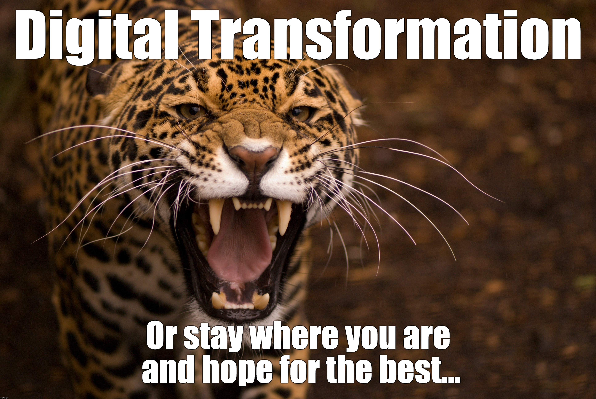
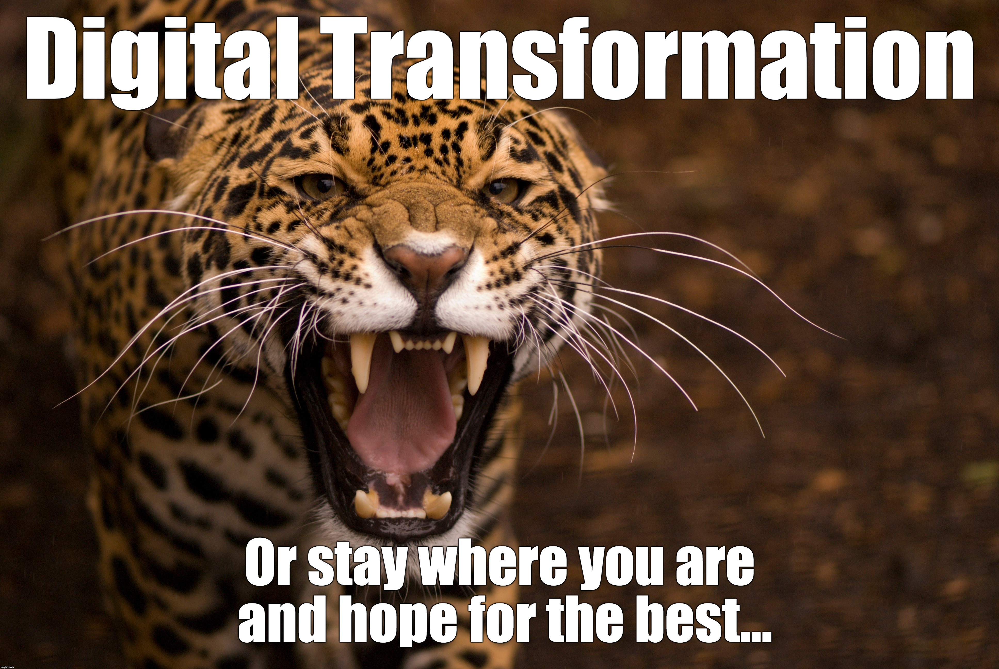

API Strategy
MENA API Road Show 2018
Erik Wilde (@dret)
API Academy, CA Technologies
Kuwait · Riyadh · Abu Dhabi
October 2018
 [http://creativecommons.org/licenses/by/3.0/]
[http://creativecommons.org/licenses/by/3.0/]
This work is licensed under a CC
Attribution 3.0 Unported License [http://creativecommons.org/licenses/by/3.0/]


 
